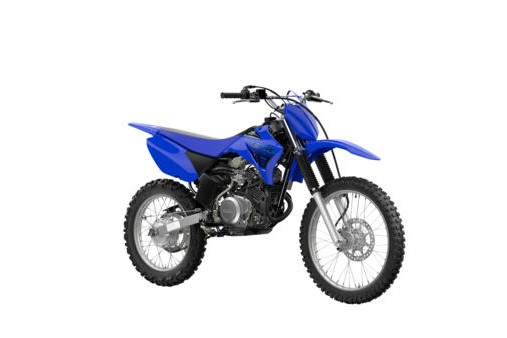

Yamaha TT-R125
The Yamaha TT-R125 is a versatile off-road bike designed for young riders and beginners. With a reliable 4-stroke engine, low seat height, and easy handling, it’s the perfect choice for building confidence on trails and dirt tracks.
Specifications
- Engine displacement: 124 cc
- Engine type: 4-stroke, air-cooled, single-cylinder SOHC
- Fuel system: Carburetor
- Transmission: 5-speed manual
- Starter: Electric & kick start
Chassis & Suspension
- Frame: Steel tube backbone
- Front suspension: Telescopic fork
- Rear suspension: Monoshock
- Front brake: 220 mm disc
- Rear brake: Drum brake
Dimensions & Weight
- Seat height: 805 mm
- Wet weight: approx. 90 kg
- Fuel tank capacity: 6 liters
Key Features
- Beginner-friendly 4-stroke engine
- Electric and kick starter for convenience
- Durable design for off-road reliability
- Comfortable ergonomics for smaller riders
- Ideal trail bike for teens and learners
Price: CHF 4,990.–
← Back to overview